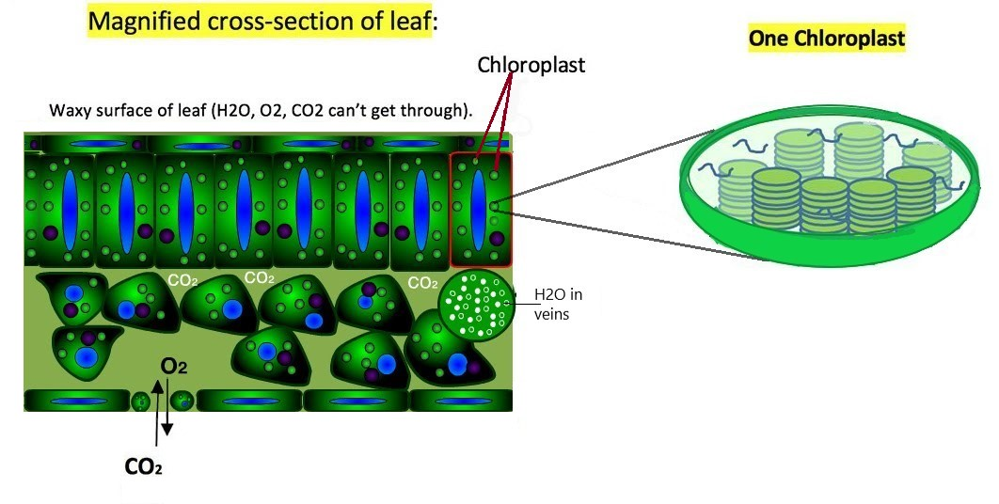
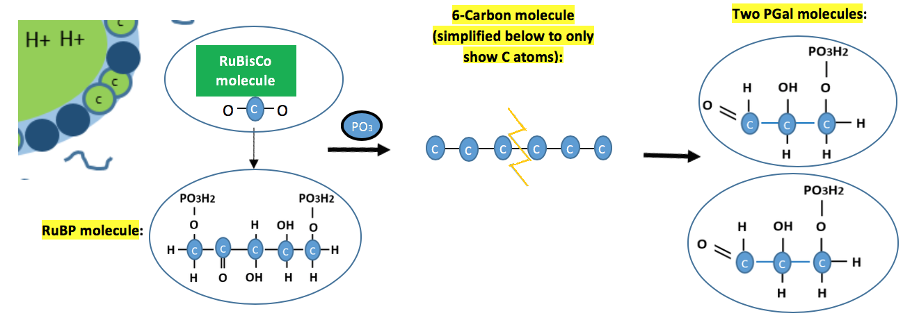

AdvancedPhotosynthesis
Advanced Photosynthesis Under Development...


There are small holes in the bottom of leaves, where gases like Co2 enter and O2 exit. Within the cells of leaf are little organs called chloroplasts.

Carbon dioxide and water molecules diffuse by randomly moving around. Some move into the tiny chloroplasts in the cells near the top part of the leaf.
Click below to hear explanation:
Click below to hear explanation:
Click below to hear explanation:
Click below to hear explanation:

Click below to hear explanation: